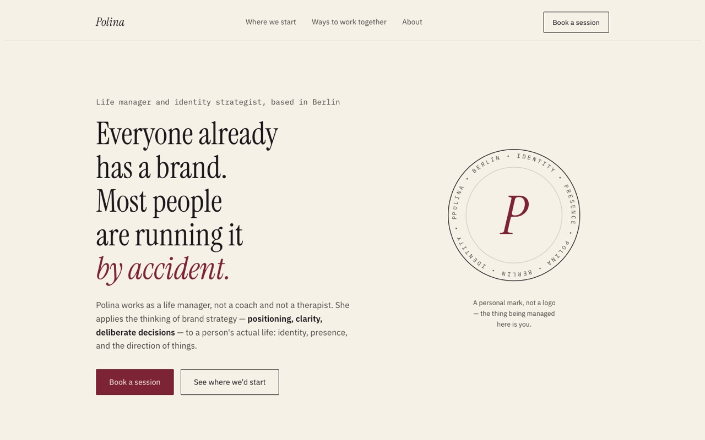
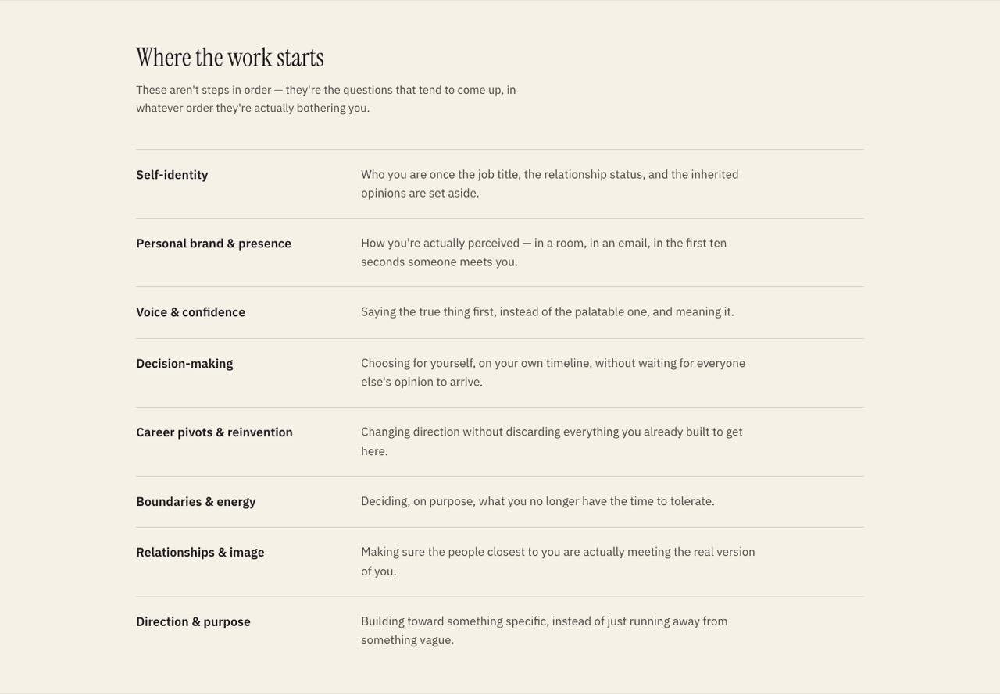
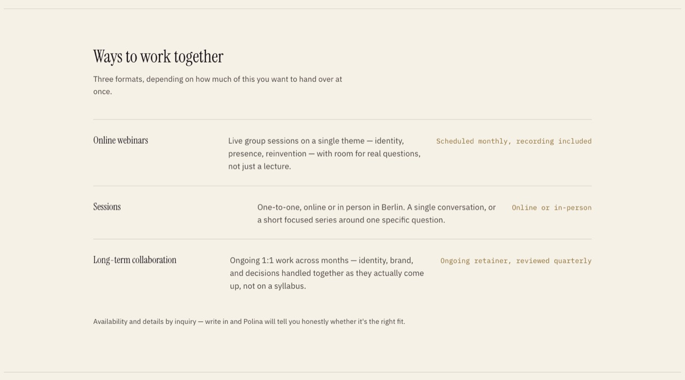
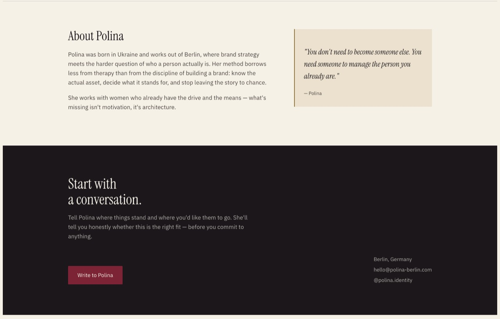
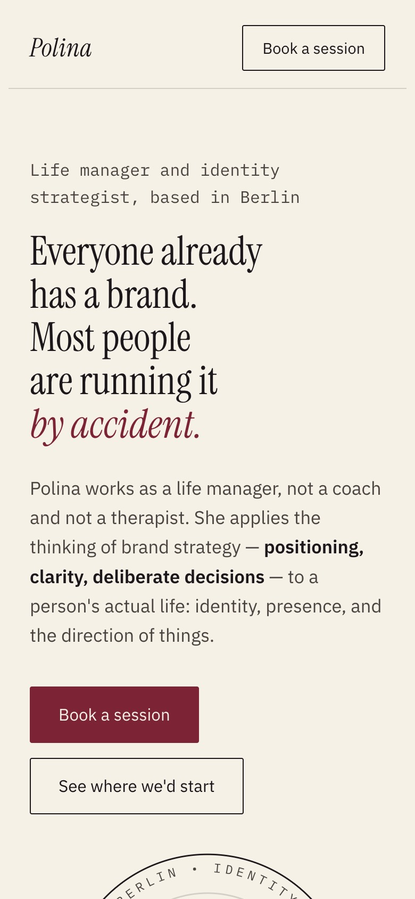
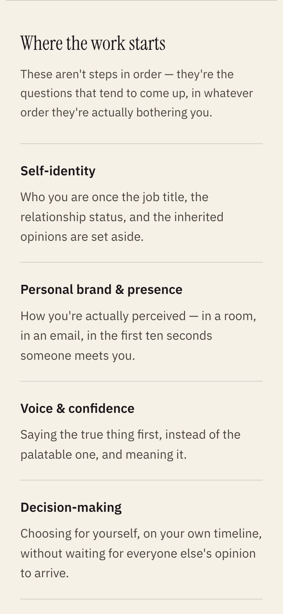
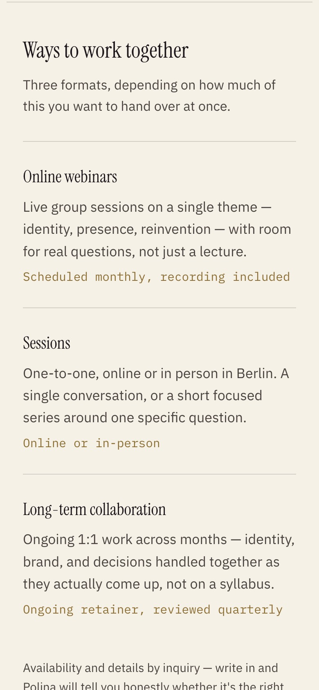
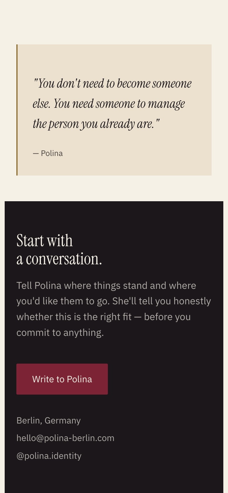
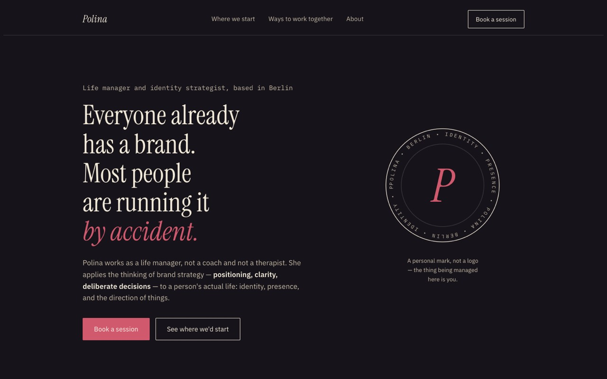

Case study · one-page website
A quiet, one-page website for a life manager in Berlin.
Polina helps people with identity, presence and personal direction. I built her site: one page that explains what she does, how you can work with her, and how to write to her. It is plain HTML and CSS, with a light and a dark theme.

What is on the page
Five parts, top to bottom: the promise, what makes her different, the topics she works on, the three ways to work with her, and a short about. It ends with one clear next step: write an email.



On a phone
The rows stack into one column and the menu goes away. The brand and the booking button stay at the top.




Light and dark
The page follows the visitor's system setting. In the dark, the paper turns into a deep plum and the wine red gets lighter, so it is still easy to read.

Decisions I made
Built with HTML, CSS and inline SVG. Fonts: Instrument Serif, IBM Plex Sans, IBM Plex Mono.